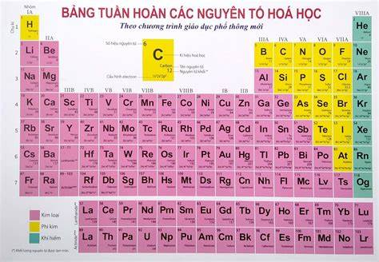
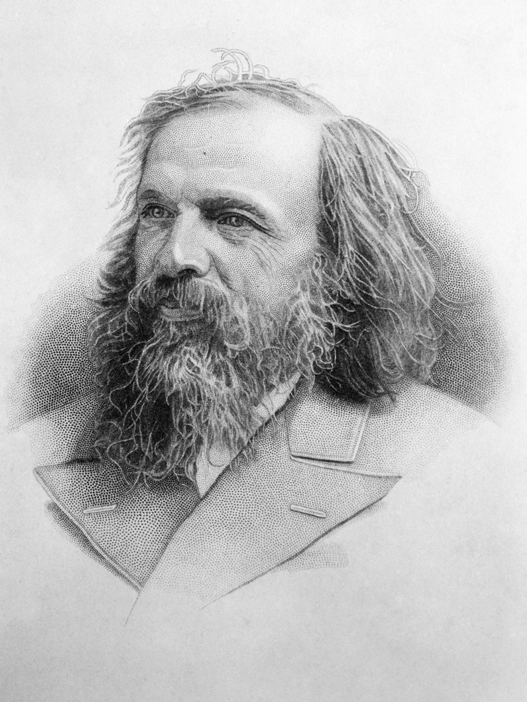
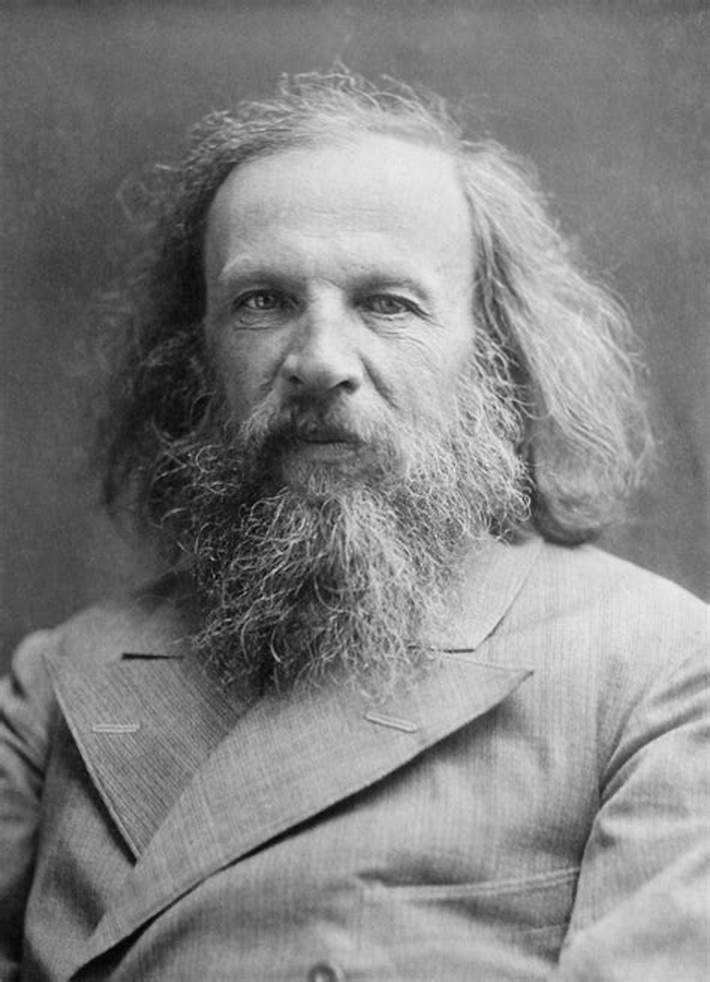

Bảng Các Nguyên Tố Hóa Học

Bảng tuần hoàn các nguyên tố hóa học

Dmitri Ivanovich Mendeleev
THỜI KÌ SƠ KHAI CỦA CÁC NGUYÊN TỐ HÓA HỌC
Trước năm 1869, đã có khá nhiều nguyên tố hóa học được phát hiện, thế nhưng người ta vẫn chưa
biết được mối quan hệ giữa chúng. Nhiều nhà khoa học đã nghiên cứu và đề xuất cách phân loại các
nguyên tố hóa học nhưng chưa ai đưa ra được nguyên tắc phân loại đúng đắn. Vì vậy, quy luật thay đổi tính chất của các nguyến tố hóa
học vẫn còn là một ẩn số ở thời điểm đó.
MENDELEEV VÀ BẢNG TUẦN HOÀN

Vào năm 1869, giáo sư trường Đại học St. Petersburg là Dmitri Ivanovich Mendeleev (1834 - 1907)
đã tiến hành nghiên cứu việc phân loại các nguyên tố hóa học. Cuối cùng, Mendeleev đã phát hiện
ra sự thay đổi tuần hoàn tính chất của các nguyên tố theo khối lượng phân tử (thời đó ngưởi ra gọi
là nguyên tử lượng) của chúng.
Ông sắc xếp 63 nguyên tố hóa học đã được phát hiện trong thời kì đó vào bảng tuần hoàn các nguyên tố theo chiều
tăng dần của khối lượng nguyên tử. Tuy nhiên, việc sắp xếp các nguyên tố hóa học dựa theo khối lượng nguyên tử
cũng gặp một số trường hợp không phù hợp với sự biến đổi tính chất của chúng.
Chọn các nguyên tố dưới đây để tìm hiểu tính chất của chúng
Các nguyên tố thường sử dụng